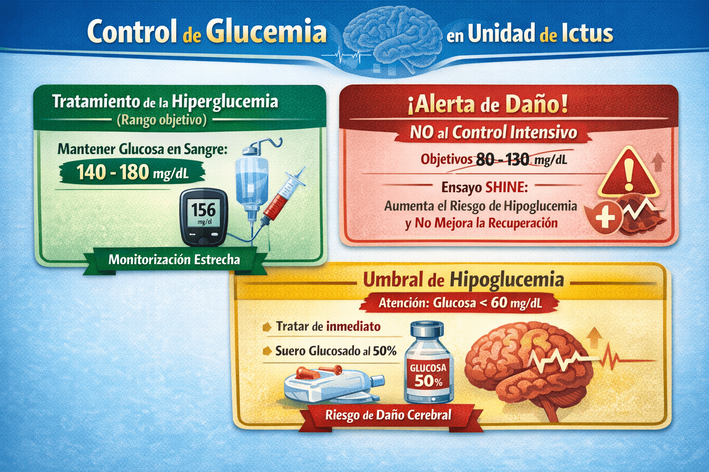

La hiperglucemia en pacientes hospitalizados es común (12–31%), y hasta una tercera parte de ellos no tiene diagnóstico previo de diabetes. La hiperglucemia persistente en las primeras 48 horas tras un ictus se asocia a peor pronóstico funcional y mayor mortalidad, favorece la progresión del infarto (mayor lactato cerebral y acidosis), reduce la eficacia de la trombólisis y aumenta el riesgo de transformación hemorrágica sintomática.
Desde el punto de vista del manejo
hospitalario, se distinguen tres niveles de actuación:
- Durante el primer día de hospitalización es fundamental planificar adecuadamente el tratamiento, pues suele mantenerse durante la estancia.
- Durante la estancia, el tratamiento requiere monitorización y ajuste individualizado de dosis.
- Antes del alta, debe determinarse la hemoglobina glicosilada (HbA1c) para ajustar el plan terapéutico posterior.
Objetivos Glucémicos y Alertas de Seguridad
- Tratamiento de la hiperglucemia (Rango objetivo): Se debe tratar la hiperglucemia persistente para alcanzar y mantener unos niveles de glucosa en sangre en un rango seguro de 140 a 180 mg/dL, mediante una monitorización estrecha.
- ¡Alerta de Daño - NO al Control Intensivo!: No se recomienda el control glucémico intensivo (buscar objetivos de 80 a 130 mg/dL). La evidencia (ensayo SHINE) demuestra que forzar la glucemia a rangos de normalidad estricta no mejora la recuperación neurológica y aumenta el riesgo de hipoglucemia severa.
-
Umbral de Hipoglucemia: La hipoglucemia (<60 mg/dL) debe tratarse de inmediato de forma agresiva (ej. suero glucosado hiperosmolar al 50%), ya que exacerba el daño isquémico, aumenta la mortalidad y puede simular clínicamente los síntomas de un ictus.

Nota: el Ensayo SHINE protocolizaba el control glucémico intensivo con perfusión IV de Insulina.
Estrategia de Insulinización (Basal / Bolus /
Corrección)
Desde el punto de vista del manejo
hospitalario, la insulina subcutánea es el tratamiento
de elección por su rapidez y adaptabilidad a las variaciones
metabólicas del paciente agudo.
- Se utilizará el régimen de Terapia Basal–Bolus–Corrección.
- Contraindicación de "insulina en escala": No debe usarse la insulina en escala móvil de forma aislada, ya que es ineficaz, solo trata la hiperglucemia a posteriori sin prevenirla, dejando al paciente sin cobertura basal y provocando un mayor riesgo de fluctuaciones hiper-hipoglucémicas.
Recomendaciones Generales
-
Monitorizar regularmente los niveles de glucemia:
-
Pacientes que comen: Controles preprandiales en desayuno, almuerzo, cena y a las 24:00 h.
-
Pacientes en ayunas, nutrición enteral continua o parenteral: cada 6 horas (6–12–18–24 h).
-
-
Evitar sueros glucosados o hipotónicos: Queda estrictamente prohibida la administración de soluciones como la dextrosa al 5% en la fase aguda, ya que el agua libre exacerba gravemente el edema cerebral isquémico. Su uso queda reservado exclusivamente para el tratamiento de rescate de hipoglucemias documentadas.
-
Seguir el régimen de insulinización Basal–Bolus–Corrección.
-
La insulina es la herramienta más eficaz: permite un control rápido y adaptable a las variaciones metabólicas del paciente agudo.
-
Antidiabéticos orales desaconsejados: Su acción es lenta, errática y conllevan riesgo de hipoglucemia sostenida o efectos adversos ante inestabilidad hemodinámica o disfunción renal.
-
Alerta Metformina: Debe suspenderse obligatoriamente durante al menos 48 horas si el paciente ha sido sometido a un AngioTC (contraste yodado), por riesgo de acidosis láctica.
-
Planificación al Alta: Antes del alta, debe determinarse la hemoglobina glicosilada (HbA1c) para ajustar el plan terapéutico a largo plazo (prevención secundaria).